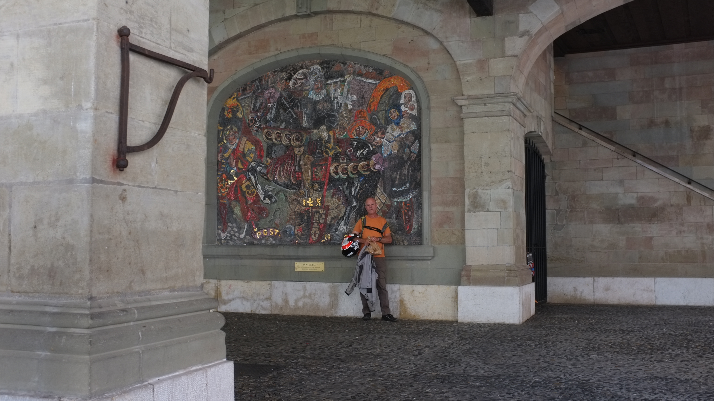

Geneva
These were taken on a trip with the sixth form in Switzerland. Although they might not be the most ground breaking photos, I remember it being one of the first times feeling confident enough to use my camera infront of freinds. Having people around that help grow that confidence helped me.